英國國家美術館廣東話語音導賞
英國 · 倫敦 · The National Gallery
688 件藏品，每件都有中文講解
由梵高《向日葵》、荷爾拜因《大使》到泰納《被拖去解體的戰艦「無畏號」》，英國國家美術館的西歐繪畫傑作，每一幅都有中文導賞。
- 粵語（香港）
- 普通話（台灣）
- 普通話（內地）
即將登陸 App Store
App 即將推出，敬請期待。推出後免費下載，每座博物館單獨購買，一次購買永久使用。
講解包括這些名作
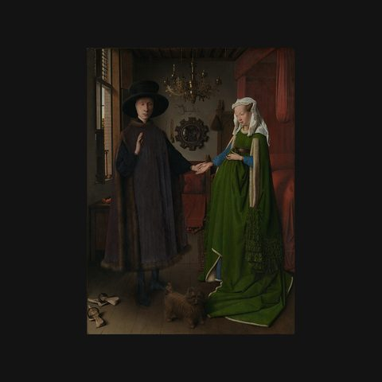
阿爾諾芬尼夫婦像揚·范艾克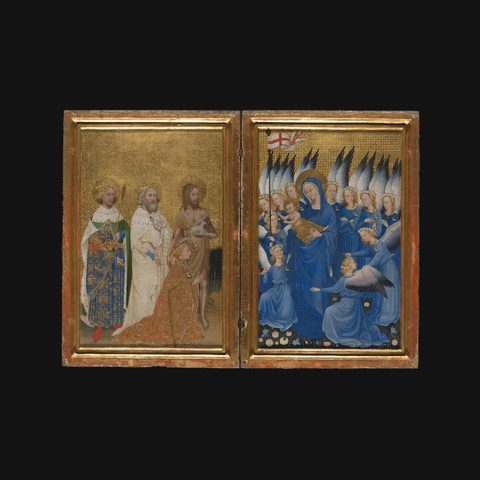
威爾頓雙聯畫佚名 · 英國或法國畫家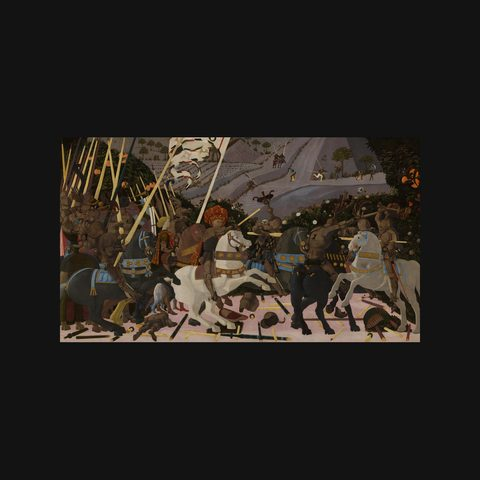
聖羅馬諾之戰烏切洛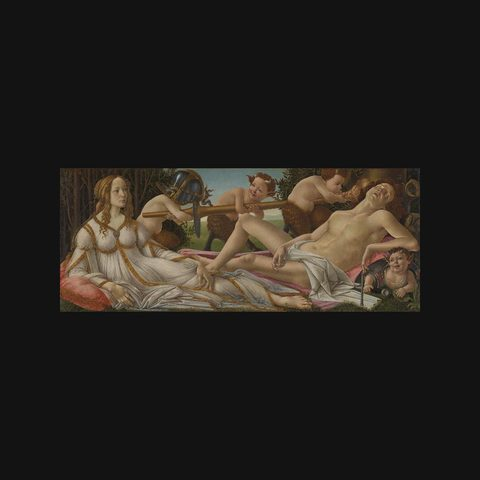
維納斯與戰神波提切利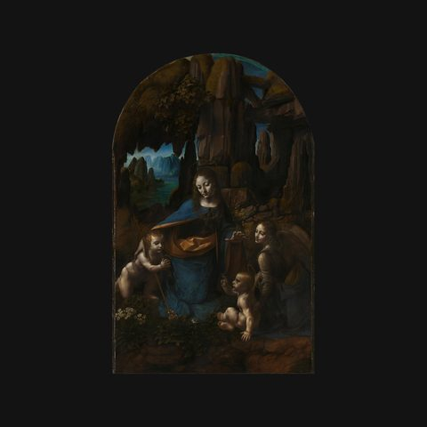
岩間聖母達文西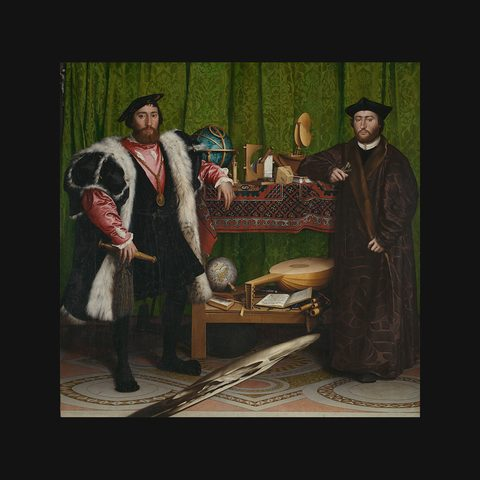
大使荷爾拜因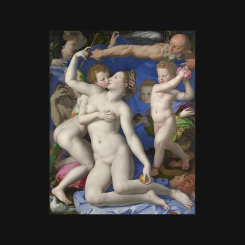
維納斯和邱比特的寓言布龍齊諾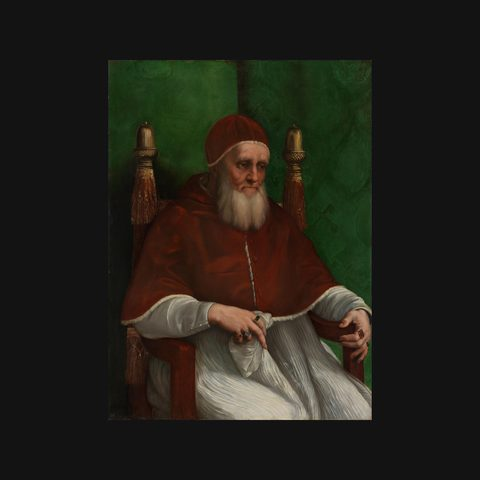
教宗尤利烏二世拉斐爾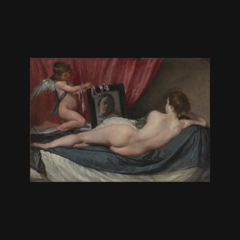
鏡前的維納斯維拉斯奎茲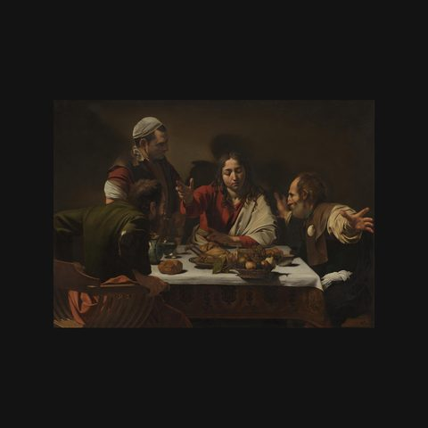
以馬忤斯的晚餐卡拉瓦喬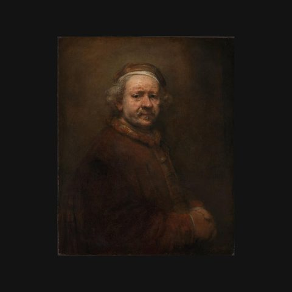
六十三歲的自畫像林布蘭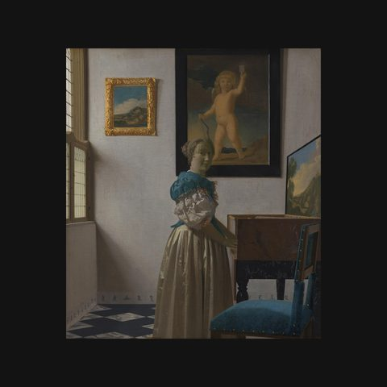
站在維金娜琴前的少女維梅爾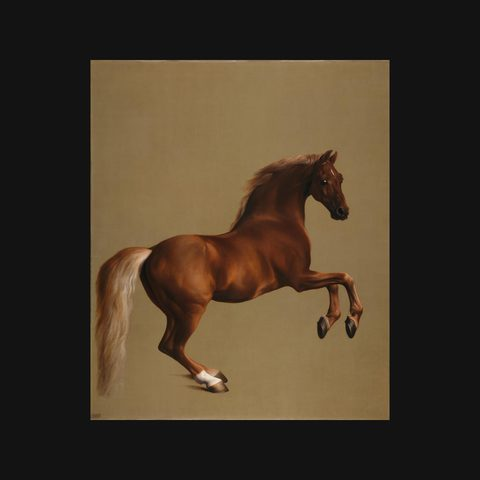
惠斯爾傑克特史塔布斯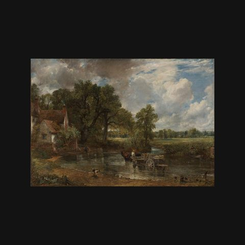
乾草車康斯特布爾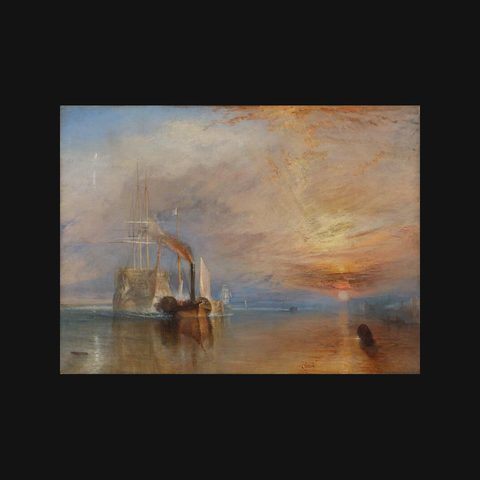
被拖去解體的戰艦「無畏號」泰納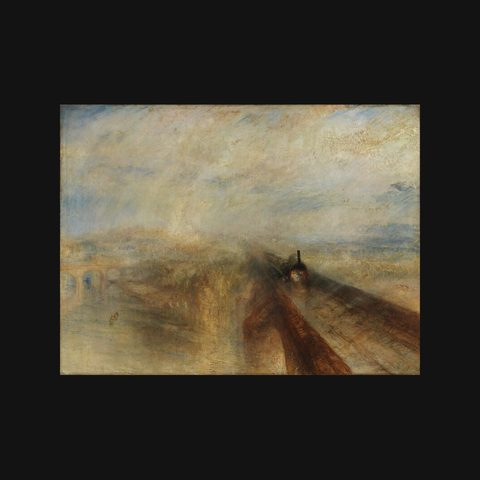
雨、蒸汽、速度——西部大鐵路泰納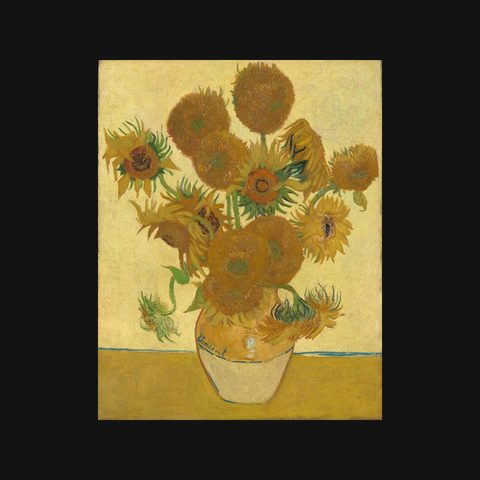
向日葵梵高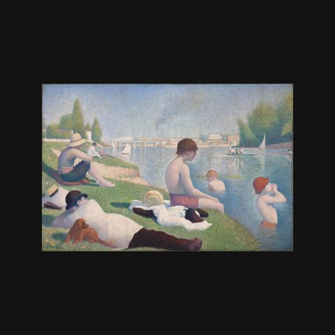
阿涅爾的浴者修拉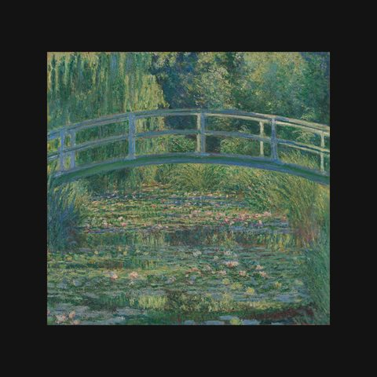
睡蓮池莫奈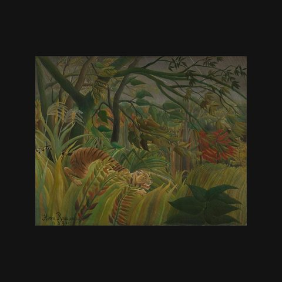
熱帶風暴中的老虎盧梭……還有更多，共 688 件。
三種中文，聽你最熟悉的那一種
- 粵語（香港）地道廣東話講解，講稿亦以廣東話書寫，繁體中文。
- 普通話（台灣）台灣口音國語講解，繁體中文講稿。
- 普通話（內地）標準普通話講解，簡體中文講稿。
參觀貼士
- 出發前在 Wi-Fi 下將英國國家美術館整館導賞下載好，館內冇訊號都用得。
- 帶備耳機，在展廳內不會打擾別人。
- 見到有興趣的作品，舉起手機對準就能識別；亦可以在作品列表按名稱搜尋。